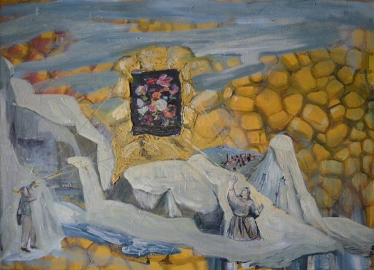

Jeffrey Dennis
b.1958
Artist Biography
Jeffrey Dennis was born in Colchester, Essex and studied at Slade School of Fine Art 1976-80. An unusual semi-figurative artist, Dennis showed widely from an early age and from 1985 had solo exhibitions with Salvatore Ala Gallery, New York, Milan and London. Group shows included the Whitechapel Open 1980, Comic Iconoclasm at ICA in 1987 and John Moores Liverpool exhibitions 1997-8. A lecturer at Ruskin School of Drawing, Oxford 1991-97 and then at Chelsea College of Art from 2000, Dennis continues to show at prestigious venues, including the Royal Academy in 2010. His work is held in many public collections including Arts Council, British Council, Leeds City Art Gallery, Saatchi Collection, Stedelijk Museum, Amsterdam and the Tate Gallery.

Gift, 1985